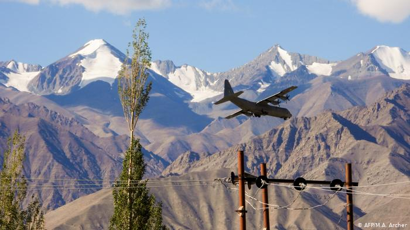

КНР и Индия договорились о разведении войск на линии контроля в Гималаях
После недавней вспышки напряженности переговоры глав МИД Китая и Индии прошли в Москве.
Подробнее >>>После недавней вспышки напряженности переговоры глав МИД Китая и Индии прошли в Москве.
Подробнее >>>В связи с сообщениями о выходе Алексея Навального из комы следственное подразделение готовит дополнительный запрос о правовой помощи Германии.
Подробнее >>>В Калифорнии лесные пожары бьют все рекорды, огонь опустошил площадь в 12 тысяч квадратных километров, погибли как минимум 12 человек. В Орегоне 40 тысяч человек эвакуированы.
Подробнее >>>Российские врачи не нашли в анализах Навального следов химоружия, заявил Василий Небензя, обвинив Берлин в сокрытии данных. Постпред ФРГ указал, что все данные переданы в ОЗХО.
Подробнее >>>В Беларуси не прекращаются протесты и забастовки после президентских выборов 9 августа и объявления победы Александра Лукашенко. Хроника событий 11 сентября.
Подробнее >>>Хакеры из РФ атаковали более 200 организаций, имеющих отношение к выборам президента США, заявили в компании Microsoft. В кибератаках участвуют также хакеры из Китая и Ирана.
Подробнее >>>